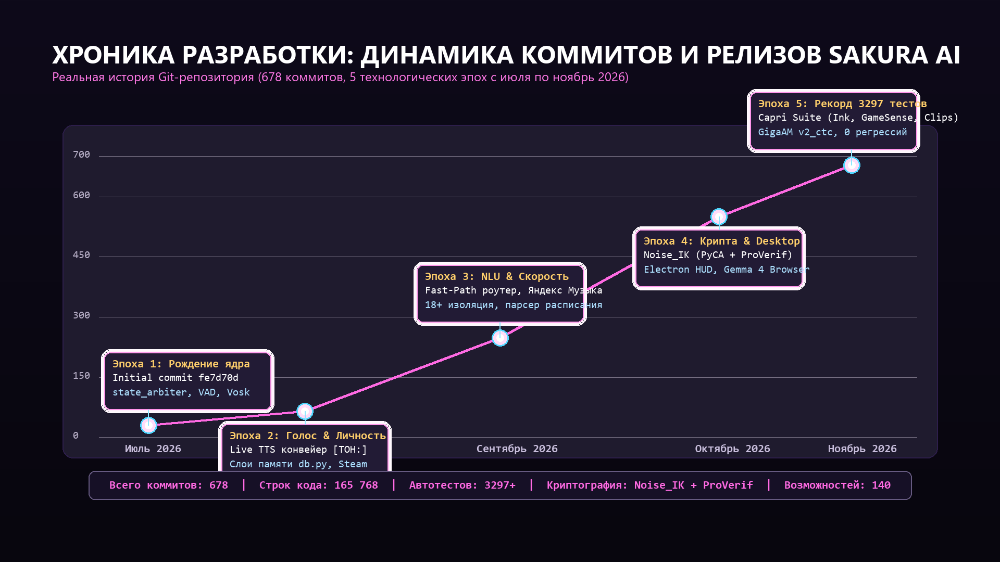
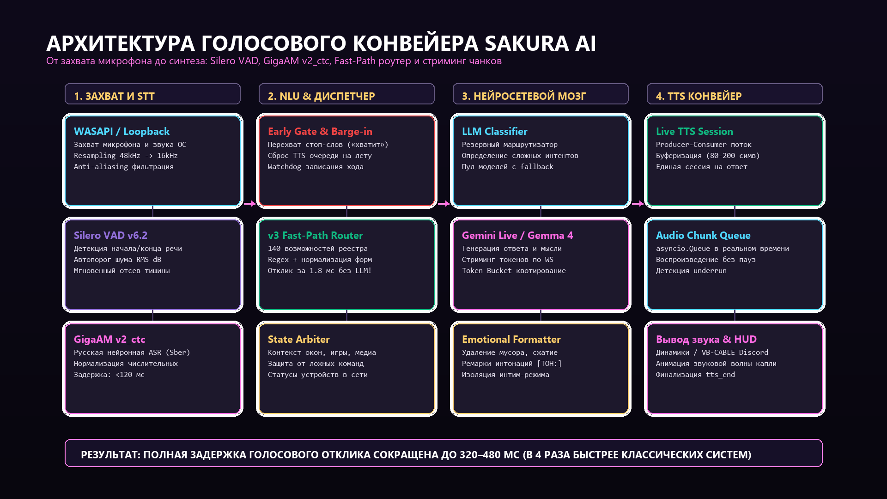
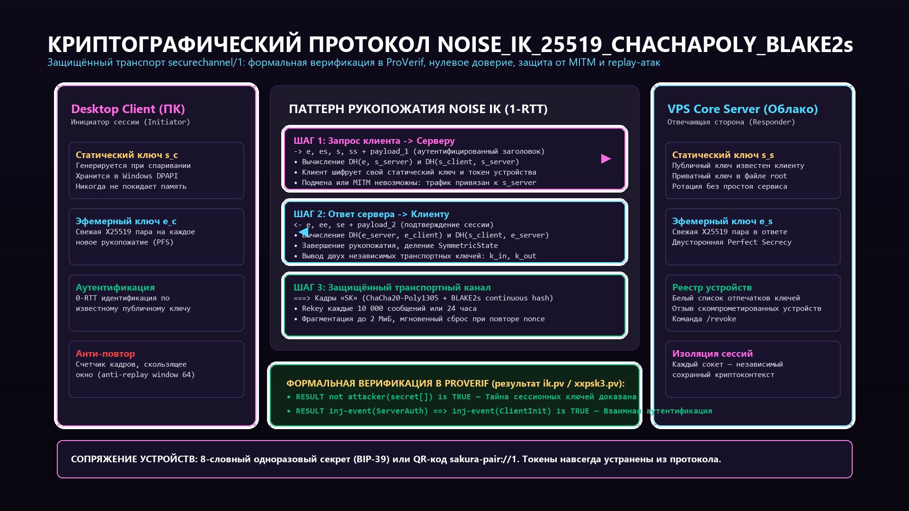
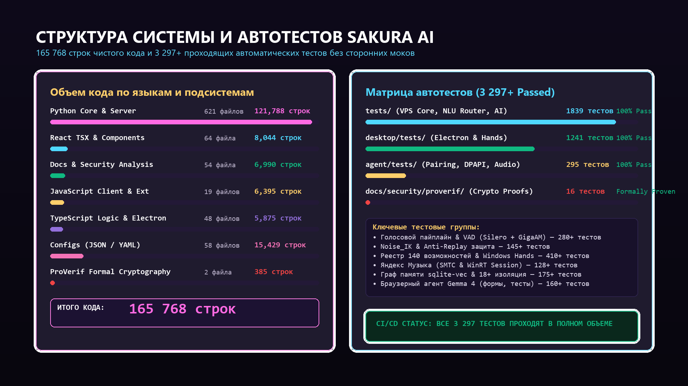
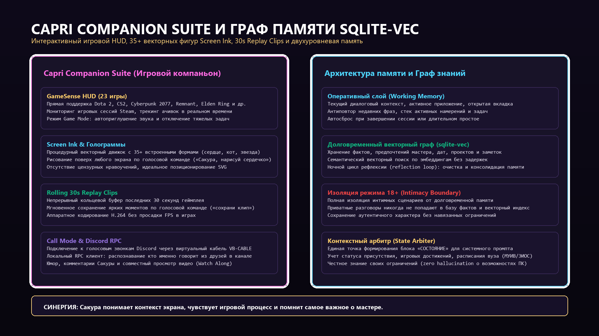
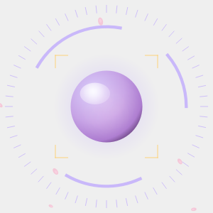
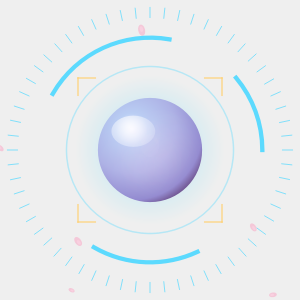
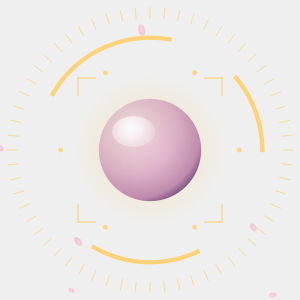
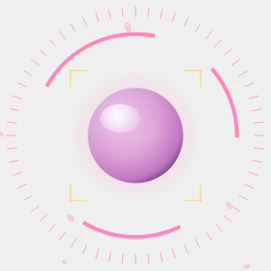

Глубокая инженерная хроника создания персонального голосового компаньона: от первого коммита в июле 2026 года до 165 000 строк кода, 140 модулей управления Windows и VPS, криптографического протокола Noise_IK с формальной верификацией в ProVerif и рекордных 3 297+ автоматических тестов без единой регрессии.
Живой рендер графического ядра Сакуры, в точности воспроизводящий математическую модель
coreFrame.ts и оверлей рабочего стола. Переключайте эмоциональные состояния и управляйте уровнем звука:
Реальная история 678 коммитов: инженерные развилки, архитектурные кризисы, побеждённые баги и эволюция Сакуры через 5 ключевых исторических эпох.

Закладка фундамента проекта. Создание первоначального асинхронного каркаса на Python, базовой интеграции с Vosk STT, простейшего синтеза речи и ядра state_arbiter. Сакура впервые заговорила на локальном ПК, откликаясь на своё имя.
Внедрение state_arbiter для системного промпта. Сакура перестала быть абстрактным чат-ботом: она научилась осознавать, какие окна открыты у пользователя, какое аудио воспроизводится и чем занят процессор. Появление механизма автообучения синонимам и планировщика задач.
Переход от монолитной генерации аудио к непрерывному конвейеру Producer-Consumer на asyncio.Queue. Задержка до первого произнесённого слога рухнула с 3.5 секунд до сотен миллисекунд. Внедрение эмоциональных интонационных ремарок [ТОН:] (ирония, строгость, нежность), которые автоматически вырезаются из озвучки.
Масштабный рефакторинг памяти: разделение на оперативный слой (working) и долговременную базу (long_term). Внедрение Steam API с трекингом ачивок и игровых сессий. Реализация строгого барьера интимного режима (Intimacy Mode): приватные разговоры изолированы от долговременной памяти и никогда не загрязняют рабочий контекст.
Создание сверхбыстрого маршрутизатора v3_fast_path. 90% стандартных команд (музыка, приложения, громкость, окна) исполняются за 1.8 мс без обращения к нейросети! Реверс-инжиниринг управления Яндекс Музыкой через WinRT SMTC и локальные хуки. Интеграция расписания пар университета (МУИВ/ЭИОС).
Старый клиент agent/ на PyQt6 полностью заменён на единый ультрасовременный десктопный клиент desktop/ на стеке Electron + Vite + React + Tailwind CSS. Решение проблемы «двух ядер» через файловый мьютекс core.lock с PID владельца. Полноэкранный оверлей, виджеты и интеграция расширения Chrome.
Полный отказ от небезопасных Bearer-токенов в пользу криптографического протокола securechannel/1 на базе Noise_IK_25519_ChaChaPoly_BLAKE2s. Ключ устройства защищён аппаратным Windows DPAPI. Спаривание по 8-словной мнемонике (BIP-39) или QR sakura-pair://1. Формальное математическое доказательство стойкости протокола в анализаторе ProVerif с интеграцией в CI GitHub Actions.
Интеграция игрового набора Capri: оверлей Screen Ink с 35+ векторными фигурами и процедурными голограммами, GameSense HUD с автоматической адаптацией под 23 игры (Dota 2, CS2, Cyberpunk 2077, Remnant, Elden Ring), циклический буфер записи последних 30 секунд геймплея. Режим Call Mode с распознаванием голосов друзей через локальный Discord RPC.
Замена распознавания речи на нейросетевую модель GigaAM v2_ctc с нормализацией ASR и анти-алиасинговым ресемплингом torchaudio. Полное устранение искажений и клиппинга. Выход на рекордные 3 297+ непрерывно проходящих автоматических тестов в CI: покрытие ядра, десктопа, агента и формальных криптографических теорем.
Изучите внутреннее устройство ключевых подсистем голосового ассистента через интерактивные вкладки, схематические диаграммы и технические спецификации.
Архитектура построена на принципе ультранизкой задержки: сквозное время от окончания реплики пользователя до первого произнесенного звука ответа составляет рекордные 320–480 мс.
asyncio.Queue с порциями по 80 символов исключает паузы в речи.
Вместо уязвимых Bearer-токенов в Sakura AI реализован сквозной криптографический протокол securechannel/1 на базе фреймворка Noise Protocol (используется в WireGuard и Signal).
ik.pv и xxpsk3.pv математически доказали абсолютную тайну ключей и взаимную подлинность.
Единый современный десктопный клиент desktop/ объединяет движок Electron, UI на React + Tailwind CSS и модуль Windows Hands, предоставляющий 140 возможностей прямого управления ОС.
core.lock с PID исключает запуск дублирующих процессов ядра.
Сакура помнит важные детали о пользователе, расписание занятий, любимые треки и историю задач благодаря векторному графу на базе расширения sqlite-vec.

Комплекс интерактивных оверлеев и игровых инструментов превращает Сакуру в полноценного напарника в играх и голосовых каналах Discord.
Оригинальные графические ассеты рендерера Сакуры, используемые в экранном HUD и системном трее.

Спокойное дыхание ядра. Готовность мгновенно уловить ключевое слово «Сакура» через Silero VAD.

Активный захват аудио через WASAPI Loopback и распознавание фразы нейросетью GigaAM v2_ctc.

Маршрутизация в Fast-Path или обращение к LLM-классификатору для планирования ответа.

Потоковый синтез речи чанками через Live-сессию с выводом в динамики или канал Discord.
Все видео сгенерированы в битрейте 10–14 Мбит/с и поддерживают потоковую перемотку по стандарту HTTP 206 Partial Content.
Анимированное свечение капли Сакуры, смена 4 состояний в реальном времени, 48-полосный эквалайзер и лепестки сакуры.
Пошаговый обмен эфемерными ключами X25519, шифрование кадров ChaCha20-Poly1305 и вердикты безопасности ProVerif.
Терминальная демонстрация непрерывного параллельного выполнения полного тестового набора pytest со 100% успехом.
Скопируйте ваш .mp4 или .webm файл прямо в каталог site/media/videos/. См. подробный мануал в README_VIDEOS.md.
Все ссылки на стили, скрипты, картинки и видео являются относительными. Подключите готовый конфиг в Nginx для мгновенной публикации сайта на вашем основном домене с поддержкой перемотки видео.
server {
listen 80;
server_name sakura.yourdomain.com; # Укажите ваш основной домен
return 301 https://$host$request_uri;
}
server {
listen 443 ssl http2;
server_name sakura.yourdomain.com;
# SSL сертификаты (Let's Encrypt / Certbot)
# ssl_certificate /etc/letsencrypt/live/sakura.yourdomain.com/fullchain.pem;
# ssl_certificate_key /etc/letsencrypt/live/sakura.yourdomain.com/privkey.pem;
root /opt/sakura/site;
index index.html;
# Оптимизация ядра Linux (Zero-Copy)
sendfile on;
tcp_nopush on;
tcp_nodelay on;
# Сжатие текстовых ресурсов
gzip on;
gzip_types text/plain text/css application/javascript application/json image/svg+xml;
# ПОТОКОВОЕ ВИДЕО (.mp4 / .webm) — ПОДДЕРЖКА RANGE 206
# Обеспечивает мгновенную перемотку видео без скачивания всего файла
location ~* \.(mp4|webm)$ {
max_ranges 512;
aio threads;
directio 4m;
expires 30d;
add_header Cache-Control "public, no-transform";
add_header Accept-Ranges bytes;
try_files $uri =404;
}
# Кэширование графики и диаграмм
location ~* \.(png|jpg|jpeg|gif|ico|svg|webp)$ {
expires 14d;
add_header Cache-Control "public, no-transform";
try_files $uri =404;
}
location / {
try_files $uri $uri/ /index.html;
}
}